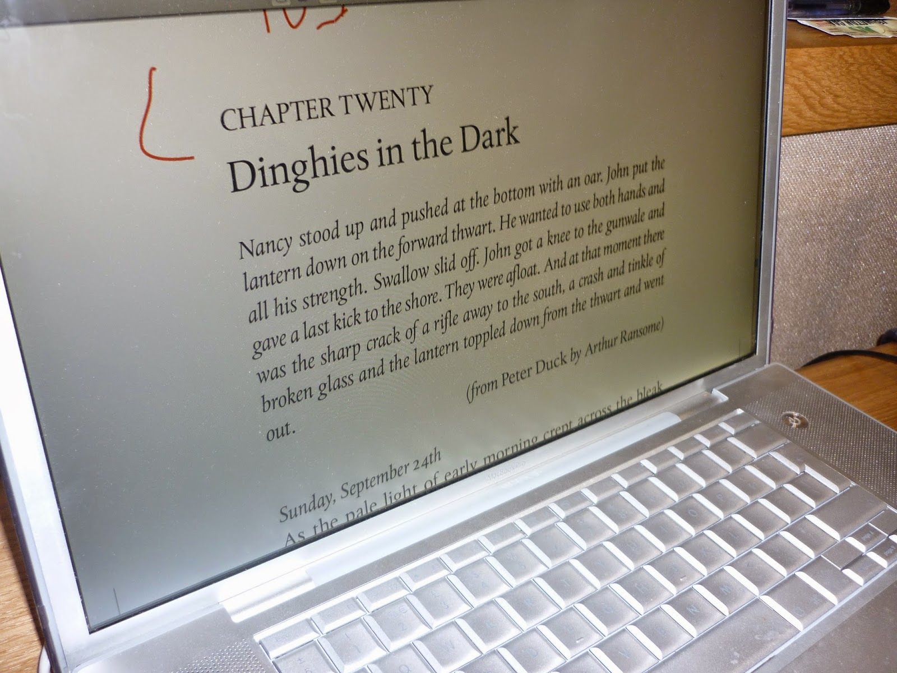
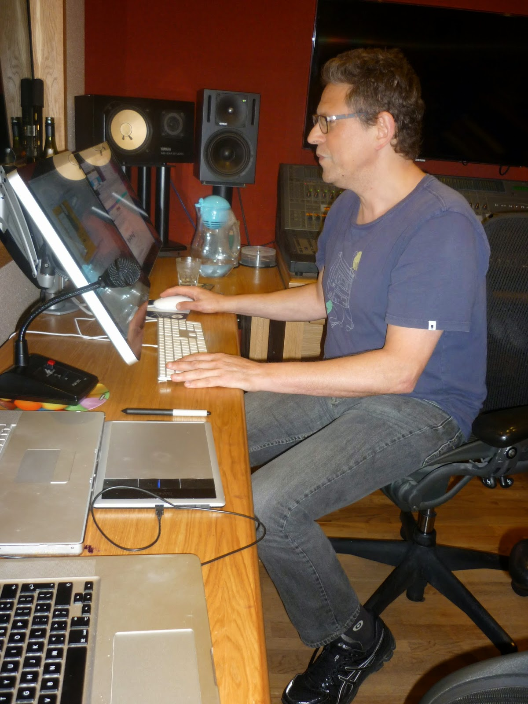
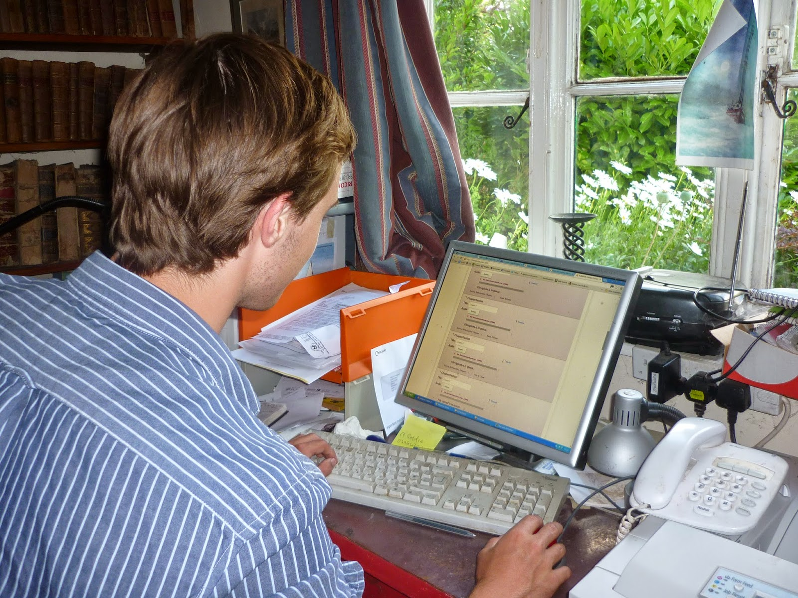

{kind=link}
The Salt-Stained Book was my first
published novel. When, in 2011, I saw its words on a page, in type, I felt an
unexpected rush of emotion. I'll be honest, I cried. The
story itself had come easily -- with conviction and delight -- but it had been a long struggle to get it into print. I love books and once the words
were there, fixed and ready to read, it felt like one of the greatest
moments of my life. An electronic edition came later and was exciting but less
profoundly moving. I'd got used to seeing the physical shape of the words away from my own screen.
What I hadn't fully experienced was
their sound. Yes, of course I'd read it aloud in my mind as I was
working. For a brief couple of terms, many years ago, I had the poet,
Charles Tomlinson, as my university tutor. He required every undergraduate essay,
however nitpickingly abstruse (or, more likely, naively
tendentious), to be read to him in his rather large room from the
other side of a grand mahogany table. (At least that's how I remember
it.) Then he would wince at every repetition, tautology or unintended
internal rhyme. It was a terrifyingly effective discipline.
| Anna Bentinck |
{kind=link}
One wet evening, in May this year, I
made my way to a studio in a bleak area near King's Cross station in
London to hear actress Anna Bentinck record the final fifty pages of
the SSB for publication as an audio download. I was nervous and so it
turned out was Anna. “I've never had the author listening before.”
This amazed me. Anna is a hugely experienced actress who has made
over eight hundred BBC radio broadcasts and has been reading audio
books all the years I've known her. Authors are regularly invited to attend when their books being recorded for film or TV but not for audio. I
think that's something that's about to change radically with the
advent of Amazon’s ACX system in the UK and writers' direct
involvement in both the commissioning and production of spoken word
versions of their books. I'd have been unable to embark on this project without the distribution facilities of ACX.
The studio was calm and welcoming, a
small insulated capsule where producer Adam Helal works with intense
concentration from early morning until late in the night. He's busy
these days. “People have got their smart phones and their ipods and
they're finding that they want more than music to listen to.” With the
advent of the download replacing the spoken word CD or cassette
it's now much more economical to produce unabridged versions of
books. It means hours of work for the narrator and the production
team but, as with ebooks, all the costs of the packaging and
distribution of physical objects have gone and there must be adults
all over the world re-discovering the delight of being read to without the frequent disappointments of a poor abridgment -- jerky
plots, inconsistent detail, radically slashed description. No wonder
writers were kept away!
(The real reason that studios and actors prefer to work on their own are more mundane. Profit margins on traditionally produced audio books are very tight so hourly rates are low and all costs must be kept to a minimum. Speed is of the essence and a good actor / producer relationship is astonishing quick and effective -- as I was about to witness. Including a third party could put all this in jeopardy.)
(The real reason that studios and actors prefer to work on their own are more mundane. Profit margins on traditionally produced audio books are very tight so hourly rates are low and all costs must be kept to a minimum. Speed is of the essence and a good actor / producer relationship is astonishing quick and effective -- as I was about to witness. Including a third party could put all this in jeopardy.)
 |
| They continued from where they'd left off |
{kind=link}
Adam and Anna have worked together on
many occasions and were swiftly continuing from where they'd left the
story at a previous session. I was nervous that I'd cough or drop
something but Adam reassured me that no extraneous sound would be detected. For Anna it was different. "You're popping." "You're
clicking." "There's a bit of tummy there," Adam would tell her and
they'd go back seamlessly, pick up from the previous sentence and
re-record the offending passage. She'd not been allowed to drink milk
all day as milk makes the voice 'growly'. She'd also had to eat a
meal precisely two hours before recording to minimise stomach noise.
He told me that I'd begin to hear these flaws but I didn't. It was
all quite personal but also completely professional. Adam was also
reassuring: "That's lovely Anna." "Yes, brilliant, you're doing well." Accepting that she was a creative artist giving a performance without an audience. (She wasn't reading to me: she was reading to people she'd never know or meet.)
It was a performance I was honoured to
witness. I'd never fully appreciated the skill of a voice actress.
I'd seen Anna 'prepping' a book and had casually assumed that meant
skimming through to get the flow and check any pronunciation issues.
How wrong I was. Even a relatively short novel like The Salt-Stained Book turns out
to have a multiplicity of distinct voices. Later, I counted thirty different speakers. Most of
those are walk-on parts – a policewoman, a school administrator, a
playground bully, a media relations officer – but there are ten
named adult characters, six named children and a deaf woman who
communicates by signing. Anna needed voices for ALL of
these! I was glad when she rang me up one weekend to ask questions about some of the characters but essentially all the
'casting' decisions were hers.
 |
| Adam Helal working in Tileyard Studios |
{kind=link}
I was hugely relieved that I was the
right side of the sound proof screen as there were several occasions
that I burst out laughing at Anna's interpretations of two of my
characters who I'd hoped to present as grimly comic. They weren't
quite the voices I'd had for them inside my own head: they were better. A
repertoire of accents is part of Anna's stock in trade and I
especially loved the expert Australian of Great Aunt Ellen, the
expressive West African of Joshua and June Ribiero and the unexpected
(but again completely right) Irish accent of Mr McMullen, Donny's
tutor. Then they all started talking to one another and she had to
switch with the skill of a ventriloquist. All on her own in a bare,
softly-lit room, reading from an ipad and liable
to be checked and asked to repeat at any moment. There were moments I found myself more moved than I'd ever been before. And I'm allegedly the writer!
The child characters might have been
more difficult. They were the ones Anna had phoned to talk about. The
central character, Donny, has grown up in Leeds. Should he therefore
have a Northern accent? Well no, probably not. He has been brought up
by his granny, an RP (Received Pronunciation) speaker and his mother
who is profoundly deaf. Their home language is a version of BSL
(British Sign Language) idiosyncratically influenced by Granny's
small collection of classic books and whatever Donny borrows from the
library. Donny's home and school lives are strictly separate and they
don't possess a television. His own voice is unlikely to be
Yorkshire.
 |
| The edition of Swallows & Amazons which Donny and his mother buy |
Should he be RP? No again. There is an aspect of The Salt-Stained Book that is a commentary on Arthur Ransome's Swallows and Amazons. Donny
has his counterpart in Ransome's John Walker, confident,
boarding-school educated, eldest son of a naval officer. Donny is none
of those things. He's thirteen. His voice is beginning to break. He's
slightly inarticulate, lacks confidence and is prone to outbursts of
anger. “Voice him as Ordinary Boy,please” I asked Anna, once
again not quite appreciating the challenge. Because Donny is also the
hero. He must be Ordinary Boy with the full range of internal
development, imagination and expression. The entire story is
experienced from Donny's point of view so, fortunately, when we are in Donny's mind we are listening to Anna's own beautiful narrative speech. This feels
completely the right solution to me as the voice that we hear in our
heads is significantly different from the one that bursts awkwardly out of
our mouths.
Anna first read The Salt-Stained Book several years
ago in a very early draft. It was New Year and we'd been staying in an ancient mill-house in Somerset. Outside was wet
and cold. Indoors there was one room with a huge log fire. The owners
of the house are among my dearest, most trusted friends so when
Francis and I and our children had returned home to Essex I left behind a
typescript of the SSB (Mark1). A small group of three or four remaining
guests, including Anna, sat round the fire over two or three evenings
and read it to each other. Pippa, our hostess, filtered back the comments and I incorporated them as best I could.
Anna had commented specifically on the speech of my character Xanthe Ribiero. Xanthe and her sister Maggi correspond loosely
to Ransome's Nancy and Peggy Blackett. They are clever, confident,
professional-class girls, successful dinghy racers with lovingly
supportive parents. The only thing that's unusual about them, in the
context of a rural Suffolk comprehensive school, is their skin colour.
Xanthe is the older and stronger character and the most apt to sound arrogant
or to drawl when she's angry. She was born in England, not Ghana, but
has lived in France and Canada and likes to think of herself as a
world citizen. How should she speak? Anna felt, from that first
fireside reading, that Xanthe's mixture of 'cool' speak (Hey man!) and
Ramsonesque 'Terror of the Seas' vocabulary didn't quite work. I tried to take
note of her suggestions but when I asked her after the recording how she'd got
on with Xanthe, she said “Yep, she was the only one I really had difficulty with.”
Over the past few days I've been
listening to the completed SSB (as available from Audible, itunes and
Amazon) and I think it's teaching me many useful lessons about my own
writing. The words sound as new and subtly different as they did when
I first read them on a printed page. In some ways they feel more
exposed. I'm a shockingly quick reader who skims passages of
description and reflection and gobbles action. I speed up and slow
down. The pace of listening, however, is steady, unchanging, giving all
sections of the book something much closer to parity. I'm going to
remember that as I write. But mostly I'm going to try to remember the lesson
of Xanthe.
| Anna Bentinck away from the studio |
{kind=link}
Anna, Adam and I went to the pub
afterwards and one of the things Anna explained was the importance,
to her, of a character's idiolect, their distinctively personal
selection of words. Onto that she can weave whatever tone of accent is
appropriate, without it, the spoken aspect of the personality is
unlikely to succeed. I nodded and agreed. It's a basic novelist's skill. Yet evidently, in the case of Xanthe,
it hadn't worked. I mind particularly as Xanthe is the central
character of my current work in progress. I admire and like her and want to
get her right. Clearly I must learn to listen even harder -- and spend more time hanging around with the voice professionals.
 |
| DIY - by proxy |
{kind=link}
I've said little about the mechanics of DIY audiobook production. Officially, on the ACX system, The Salt-Stained Book is classed as DIY but almost everything has been professionally produced, just as any other mainstream novel. Anna's next project was Emma Healey's novel Elizabeth is Missing, one of this summer's top-sellers from Harper Collins and Adam's website lists a host of his recent successes, including Hilary Mantel's Wolf Hall. There were a few jobs managed from home -- and cunningly I made sure that my son Bertie Wheen (the SSB's very first reader and now a computer science undergraduate) was there to see me through. Adam had sent us the sound files, divided into chapters + opening and closing credits and a less-than-5-minute sample. Bertie used a splitter programme to slice off a different sample which I felt was more representative of the book, though less of a showcase for Anna's talent. We spent an inordinate amount of time turning the rectangular book cover into a CD shaped square and then we (he) uploaded all the files and waited for the ACX quality control system to wave it through -- which, unsurprisingly it did. Audible have sent me some promotional credits which are to be allocated to reviewers -- and yes, please, dear friends -- I'd LOVE some readers and ratings. However the point of view I'd really like to get is actress Anna Bentinck's ... I wonder what she'd say?